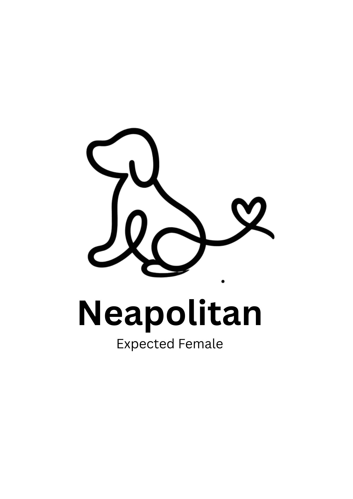
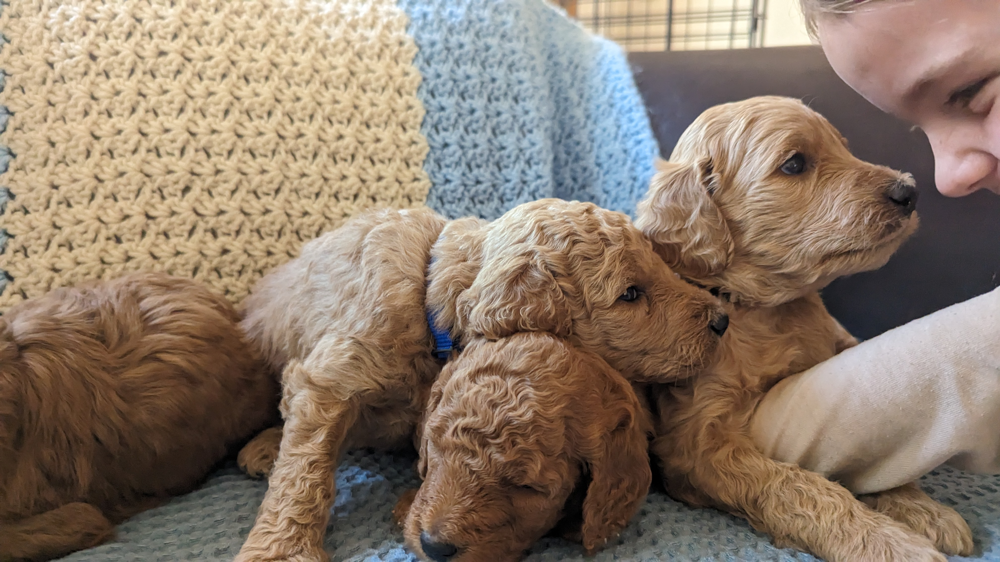

Healthy • Happy • Family Raised Goldendoodle Puppies
"We named our puppy Kiwi. She is 29 lb with tight curls and non-shedding. My puppy has had no health issues. Maybe some teeth plaque but that's it. We just love her! She is amazing with all dogs. She's a quick learner and incredibly sweet. Kiwi loves ber toys! She is a retriever through and through and always greets you with a toy in her mouth. She has so much personality!"
"We absolutely adore our girl and couldn’t be happier with her. She is 22 pounds and has the most beautiful light golden, curly coat that is soft, low-shedding, and easy to maintain with regular grooming. From the day we brought her home, she had such a wonderful temperament. She was already potty trained and knew how to sit, which made the transition incredibly easy. She was also very quick to kennel train and has always done great in her crate. She has always gotten along wonderfully with our other dog and has such a gentle, loving personality. She loves attention, enjoys being close to her family, and is happiest when she’s cuddling with us. She has the sweetest disposition and has been a joy to have in our home. She has also been extremely healthy and has never had any health issues. Overall, she has exceeded every expectation we had. She is affectionate, intelligent, easy to train, and an amazing companion. We truly love and adore her, and we feel so lucky to have her as part of our family. We wouldn’t hesitate to recommend a puppy from her line to anyone looking for a loving, well-rounded dog."
"Roxy (milk dud) is just the perfect pup. His name is Dr Snuggles aka Doc or Snugs. He has tight curls and is non shedding. He's full grown and weighs 25lbs. When our other dog died, Roxy was sad but it was so incredible to watch Roxy take care of of him, and never leave his side at the end."
"Bailey is a sweet girl who loves to go on walks with her mom. We have had many dogs in our lifetime and Bailey is by far the smartest. She is easy to train and is very calm, except when she sees her sister dog."
"Poppy is such a special girl to our family. She is the absolutely sweetest dog with the silliest personality. She is very smart, but likes to play dumb. She purrs like a cat and sits on the top of our furniture obtaining her nickname of kitty among others. She is simply the best!"
"We couldn’t have asked for a better dog or a better breeder. Teddy has been an absolute joy from the day we brought him home. He was always happy, incredibly friendly, and one of the most loving dogs we’ve ever known. He adored our children and was so gentle and patient with them. He truly became a treasured member of our family and brought so much laughter and love into our home. Working with Pat was just as wonderful as bringing Teddy home. Pat genuinely cares about the puppies she raises and was kind, honest, and a pleasure to get to know throughout the entire process. It’s clear she puts her heart into what she does. We are so grateful for Teddy and would wholeheartedly recommend Pat to anyone looking for a well-loved, well-socialized Goldendoodle. Thank you for giving us such an incredible companion—we’ll always cherish the years we had with him."



This is not just a breeding business; it's a legacy rooted in a profound love for puppies, which is why we raise the very best. We pride ourselves on introducing our puppies to grooming at a young age to ensure they are comfortable with the process. They all receive early command learning, potty training, and Early Neurological Stimulation (ENS). We also send each puppy with:
These puppies are raised around kids and household noises from day one, and they are socialized more extensively than puppies from most breeders. My commitment is simple: to raise healthy, happy puppies that truly reflect the best qualities of the goldendoodle breed.
